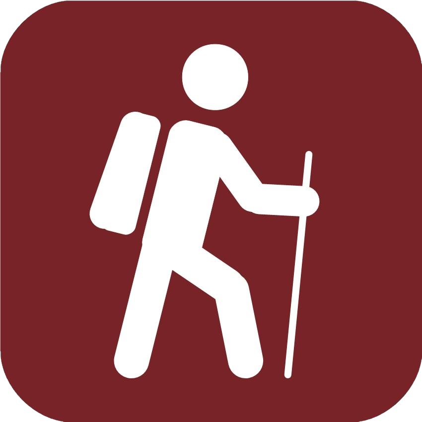
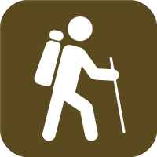

Easy Access - walks for everyone, including people with conventional wheelchairs and pushchairs, using easy access paths. Comfortable shoes or trainers can be worn. Assistance may be needed to push wheelchairs on some sections, please contact the group running the walk for details.
Easy - walks for anyone who does not have a mobility difficulty, a specific health problem or is seriously unfit. Suitable for pushchairs if they can be lifted over occasional obstructions. Comfortable shoes or trainers can be worn.
Leisurely - walks for reasonably fit people with at least a little country walking experience. May include unsurfaced rural paths. Walking boots and warm, waterproof clothing are recommended.
 Moderate - walks for people with country walking experience and a good level of fitness. May include some steep paths and open country, and may be at a brisk pace. Walking boots and warm, waterproof clothing are essential.
Moderate - walks for people with country walking experience and a good level of fitness. May include some steep paths and open country, and may be at a brisk pace. Walking boots and warm, waterproof clothing are essential. Strenuous - walks for experienced country walkers with an above average fitness level. May include hills and rough country, and may be at a brisk pace. Walking boots and warm, waterproof clothing are essential. People in doubt about their fitness should contact the organiser or leader in advance.
 Technical - walks for experienced and very fit walkers with additional technical skills. May require scrambling and use of ice axes or crampons. You must contact the organiser or leader in advance for further details.